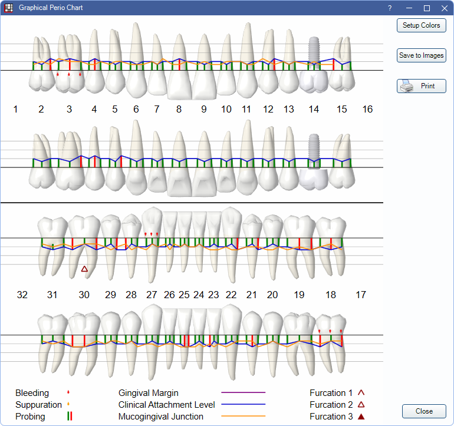

Graphical Perio Chart
The graphical perio chart is a way to view a full screen 3D image of the patient's Perio Chart.
In the Perio Chart, click Graphical.
Note: Implants are shown on the chart with the implant graphic.
Setup Colors: Click to open Graphical Perio Setup. Click a colored box to change the color of the corresponding graphic. Changes are global.
Save to Images: Save a copy of the Graphical Perio Chart in the Imaging Module to the Image Category marked for Graphical Tooth Charts .
Print: Print the Graphical Perio Chart as it appears.